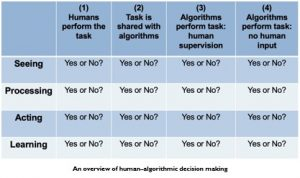
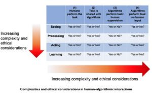

10 Unit :10 :Future Trends in Learning Analytics
Welcome to the last unit in this course! Here we attempt to not only look at what the future may hold for learning analytics but, equally importantly, think about the research questions and future pedagogical issues that learning analytics may help us solve or improve upon.
Think back to Unit 2, where we discussed evidence, data and predictions. Remember that list in Unit 2, providing some pointers for the trustworthiness of predictions? When we think about future trends in learning analytics, what immediately comes to mind is the expansion of personalised learning, intelligent and autonomous tutoring and learner support systems, and the applications of machine learning and artificial intelligence. Given that this course is aimed at a fairly general audience, we do not go into great detail when discussing machine learning and artificial intelligence, but provide links to a number of OER offering accessible and helpful information.[49] You may also want to revisit Unit 6.
Learning outcomes
After you have worked through this unit, you should be able to:
- discover the social imaginary pertaining to the use of data, notions of the “data gaze,” data colonisation, and individual and institutional responses to “data creep”
- engage with different examples and the possibilities of personalised/personal learning environments and intelligent tutoring systems
- critically examine emerging questions and issues in learning analytics, and compile a wish-list based on your specific institutional/course context
[49] A short overview of these two concepts is available at https://www.oercommons.org/authoring/27895-artificial-intelligence-and-machine-learning.
In Unit 2, we engaged with the nature of evidence and data and mentioned that somehow, individuals and organisations inherently trust numbers. When someone says his or her viewpoint is “based on data,” the statement often forecloses any questioning or doubt. The history of our “trust in numbers” is almost as old as humanity — whether referring to the number of soldiers in ancient armies or the first census to determine the size of a particular population.[50] Combine our trust in numbers with the data revolution, the increasing volumes of data, and the variety, velocity and granularity of data, and we can understand claims that having access to data is like discovering gold. In her recent publication, Shoshana Zuboff [51] claims that the economic value of data has allowed a new form of capitalism to emerge: surveillance capitalism. We don’t discuss those claims here, but we affirm that there is a global quest for more data, and that data has economic value — resulting in an increase in surveillance.
David Beer [52] and others [53] say that we need to understand what individuals and organisations believe about data and having access to more data in order to understand why there is such a race for ever more data and analytics. Beer uses the term “data imaginary” in reference to the belief that we will be better, quicker, more efficient, more productive, more intelligent, more strategic and more competitive.
[50] A fascinating book on the history and evolution of our trust in numbers is: Porter, M. (1995). Trust in numbers. The pursuit of objectivity in science and public life. Princeton University Press. Also see the more recent book by Beer, D. (2016). Metric power. Palgrave McMillan.
[51] Zuboff, S. (2019). The age of surveillance capitalism. Public Affairs.
[52] Beer, D. (2019). The data gaze. Sage.
[53] See, for example, Williamson, B. (2017). Big data in education. The digital future of learning, policy and practice. Sage.
As discussed in Unit 2, organisations seem to have embraced this view also, moving toward evidence-based management with claims that their strategies and operational plans are data led or data driven.
The data industry is expanding exponentially. There is a growing range of actors, organisations and corporations involved in collecting, storing, selling, analysing and profiting or profiteering from data and analytics. These actors aim to offer competitive solutions to individuals and organisations through the collection and analysis of data. The data industry is looking to expand the collection of data into areas not yet digitised or where the data have not been available, as well as intensifying and deepening the collection and analysis of data in areas where the data industry is already active. Beer[54] refers to this intensifying search for new forms of data or new data collection areas as “data frontiers.” This expansion of surveillance has also been referred to as a continuation of historical colonisation,[55] where individuals’ data and lives are commodified and sold to the highest bidder.
Beer furthermore suggests that the data industry markets its analytics services as “speedy, accessible, revealing, panoramic, prophetic and smart.” [56]
- Speedy: when organisations cannot afford to wait for analyses and findings, they may be offered solutions that provide “instant,” “at the touch of a button” analyses.
- Accessible: Gone are the days when you needed a team of experts to do the analysis for you. The data industry offers software solutions that anyone can access without having the necessary competencies or experience in analysing data.
- Revealing: These analytical services also promise insights from your data that you could never have imagined, increasing not only your sustainability but also your competitiveness and profitability. There are no secrets left — everything that you ever wanted to know can be revealed.
- Panoramic: No longer do you have to accept that there are some areas of the lives of customers that you don’t have data or insights on. These analytical services dangle the promise of a 360 view of your customers.
- Prophetic: All about removing/minimising uncertainty, this aspect of the service involves making predictions about what will happen in the future.
- Smart: Smart analytical services can learn autonomously without the need for human intervention to make sense of the data.
In various places in this course, we have expressed our belief that the collection, analysis and use of learners’ data can assist both teachers and institutions to fulfil their fiduciary duties to ensure effective, appropriate and ethical teaching and learning. We have no doubt that the contractual obligations between institutions and learners include all aspects relating to the collection, analysis and use of learner data. Having said that, we also are cognisant of increasing concerns around the ever-expanding data gaze in education.
[54] Williamson (2017).
[55] An interesting short video by Nick Couldry on data colonisation is available on YouTube:
https://www.youtube.com/watch?v=5tcK-XIMQqE.
[56] Beer (2019, p. 22).
As teaching and learning increasingly move online, it seems that the drive to understand how learners learn has resulted in concerted efforts to access more learner data than ever before, in terms of volume, variety, granularity and velocity. The range of data collection is constantly expanding: learners being videotaped during lectures in order to analyse their expressions and participation (or lack of); sentiment analyses on postings in an online discussion forum; multimodal analyses of learners’ sensory data and emotional states; analyses of reflective learning journal entries, and so forth.[57]
[57] See the discussion by Prinsloo, P. (2019). Tracking (un)belonging: At the intersections of human-algorithmic student support. Paper presented at the 9th Pan-Commonwealth Forum (PCF9), Edinburgh, Scotland. http://oasis.col.org/handle/11599/3373
While the quest to understand learning behaviours and journeys is understandable, there are growing concerns from scholars, learners and civil organisations about increasing surveillance in and outside of classrooms. Should any data from the learning journey be out of bounds? As we indicated in Unit 7, while the collection, analysis and use of learner data are warranted to fulfil the institution’s contractual and fiduciary duties, this does not constitute permission to annex and colonise every part of the learning journey, especially without knowledge or consent.
Our earlier notes about the data imaginary and its associated promise provide some insight into the expansion of the collection, analysis and uses of learner data. As educational institutions, especially public institutions, increasingly face budget constraints and demands for accountability, the sector has become a data frontier ready for annexation and resistance.[58]
Reflection action: What are your concerns about surveillance?
This activity is more reflective than previous ones, and there are no right or wrong answers.
a. Think of a context where you are teaching and need access to learner data and analytics to both help you teach more effectively and appropriately, and support your learners to make more informed choices. Which of the following responses resonate with your own views? (You can choose more than one option.)
i. I would love to have access to more data and analytics to help me teach more effectively and better support my learners.
ii. The data I have access to from my class observations, formative assessment and engagements with learners is enough for me to make informed decisions about my teaching and the extent to which I support learners.
iii. I understand the value of data and analytics, but I also understand concerns around the increasing surveillance of learners.
iv. While I support concerns about increasing surveillance outside of the educational institution, in my view, educational institutions and teachers have a contractual duty to use whatever data can help them teach and support learners better.
v. There should be safe spaces where learner data will not be collected, and where their behaviours won’t be tracked and analysed.
vi. I support the collection and analysis of learner engagement and learning data but not the collection of sensory data, analysis of emotions or tracking of mobile phones.
b. Look back at the discussion on the data imaginary and the promise by the data industry to provide institutions and teachers with analyses that are “speedy, accessible, revealing, panoramic, prophetic and smart.” If you were the manager of an educational institution or the head of an academic department, how would you consider such an offer? What would be your concerns? And how might the institution benefit from such a service? Or do the concerns and risks outweigh the benefits?
In 2019, Neil Selwyn, one of the most prolific and critical scholars in the field of educational technology, published a book with the title Should Robots Replace Teachers? [59] As expected, there were numerous mixed responses to his question — see, for example, the reviews from David James[60] and David Longman.[61]
While the question in the title of Selwyn’s book is provocative, it may also be misleading, since it leads us to think in binary terms — yes/no. Perhaps a more provocative question, addressed towards the end of the book, is: How do we optimally use the potential of new technologies such as artificial intelligence to improve teaching and learning in ethical and appropriate ways?
[59] Selwyn, N. (2019). Should robots replace teachers?: AI and the future of education. John Wiley
& Sons.
[60] https://www.tes.com/news/book-review-should-robots-replace-teachers
[61] https://tpea.ac.uk/wp-content/uploads/2019/10/Neil-Selwyn-Should-Robots-Replace-Teachers_.pdf
As teaching and learning are digitised and move increasingly online, the volume, variety, velocity and granularity of available data start to require a unique combination of expertise, knowledge and experience, including programming expertise. Making sense of newly available data, emerging variables, interdependencies and fluidity in data flows is simply out of reach for most teachers. Consider for a moment the amount (plus variety, etc.) of data that are generated in an online classroom with 20 learners over a 12-week period. Now compare that to making sense of the data of hundreds or thousands of learners over a 12-week period! How do teachers make sure that learners are progressing and don’t fall behind? How would teachers or an instructional support team notice when certain learners fail to log in, or do not submit a formative assignment?[62] Surely help is needed?
At the intersection of human teachers and robots
Three developments require that we seriously consider the (pros and cons of the) potential of machine learning and artificial intelligence in education.
Firstly, making sense of the volume, velocity, variety and granularity of data is becoming humanly impossible.
Secondly, technological advances now
i. allow us to increase our understanding of the data and spot possible links,
ii. point out correlations and
iii. help us understand causation.
Thirdly, there are growing concerns about systems that can learn and act autonomously — for example, in credit scoring[63] and admissions to educational institutions.[64] So how might we proceed? [65]
[62] Prinsloo (2019).
[63]
[64] https://futurism.com/ai-bias-black-box
[65] In the text that follows, we used and adapted parts of the text by Prinsloo (2019), cited earlier, and published by the Commonwealth of Learning under an Attribution-ShareAlike 4.0 International (CC BY-SA 4.0) licence. Retrieved from http://oasis.col.org/handle/11599/3373
John Danaher, an academic based in Ireland, classifies four essential components in human decision making:[66] sensing, processing, acting and learning.
- Sensing – collecting data from sources
- Processing – organising the collected data into useful chunks/patterns as related to categories, goals or foreseen actions
- Acting – using the outcome of the processing to implement a course of action
- Learning – the system learns from previous collections/analyses and adapts accordingly
Let’s consider for a moment how these components will play out in an educational situation. Think of an educator “seeing” a change in behaviour (e.g., the non-submission of an assignment), “processing” the information (e.g., classifying the learner as at risk of failing and in need of follow-up), “acting” (sending the learner a reminder or query about the non-submission) and “learning” deciding whether the reminder/query makes a difference in the learner’s behaviour).
What might happen if/when one or more of these elements are shared or taken over by an algorithm? An algorithm may, for example, “sense,” or “notice” the fact that certain learners have not submitted their assignments or not logged on for a period. The algorithm then alerts the educator, who processes the information (e.g., what steps to take) and how to act (e.g., make a phone call or send an email). When considering courses with large enrolments, algorithms can be programmed to also process the information within set parameters and act by sending these identified learners a personalised email offering a range of options and care.
[66] Danaher, J. (2015). How might algorithms rule our lives? Mapping the logical space of algocracy [Blog post]. http://philosophicaldisquisitions.blogspot.co.za/2015/06/how-might- algorithms-rule-our-lives.html
This information is then recorded by the lecturer (if s/he sensed, processed and acted), or stored by the algorithm. Whoever/whatever sensed, processed and acted then creates the possibility to learn both from what was done and how the identified learners responded (or not) to this intervention. Figure “An overview of human– algorithmic decision making” illustrates a matrix of different possibilities, ranging from
(i) humans doing all the tasks (sensing, processing, acting and learning; to
(ii) humans sharing any or most of these tasks with an algorithm; to
(iii) the algorithm doing some/most/all of these tasks but being overseen by a human; to (4) the algorithm sensing processing, acting and learning autonomously.
At this stage, please see the “Teaching with robots” video.
Watch Video: https://youtu.be/zpS3_Q_pRkg
Video attribution: “Unit 10: Teaching with Robots” by Commonwealth of Learning (COL) is available under CC BY-SA 4.0.
Figure “An overview of human–algorithmic decision making” was adapted from Danaher23 and provides an overview of the 256 potentially different options and combinations between human and algorithm, from an exclusively human-driven process to a totally autonomous decision-making system with no human involvement.

Let us consider the following possibilities:
Sue is a teacher and responsible for an online class of 100 learners. She is assisted by two support staff, who handle technical inquiries and provide learner support. The course runs over 12 weeks and is sequential — that is, learners must complete all activities for the first week successfully before they can access the content and assessment for the second week. Each week has readings, group discussions and group activities as well as automated multiple-choice self-assessment, and a formative assessment.
Following Option 1 in the first column of Figure “An overview of human–algorithmic decision making” suggests that Sue and her two support staff take full responsibility to “see,” to “process” the information, to “act” and to “learn” from the experience. How might it play out in week 1 of the course? Sue and her support staff check each learner’s login details on a daily basis, whether they participated, what they downloaded and how they are doing in the automated self- assessment(s). Each person takes responsibility for tracking the activities of 30 or so learners, every day, for a period of 12 weeks. They will “see” which learners have not logged in, or have failed the automated multiple-choice questions, and/or didn’t finish watching the instructional video. They will “process” the information every day and decide whether a particular learner who has not logged in or has failed the automated self-assessment needs support or whether their behaviour can be understood and explained and does not constitute a risk. If they do decide that they need to follow up, they must then “act” and send an email and perhaps extra resources to the learner, or enquire whether that learner needs assistance. They will also need to keep track of whether the learner’s behaviour changes, and record any changes for future reference. As such, they will “learn” so that they may respond in a more informed way in future.
You no doubt agree that this level of responsibility and care over a 12- week period with 100 learners is simply not sustainable. So, what if Sue and her team share the responsibility (Option 2 in Figure “An overview of human–algorithmic decision making”) and activate an algorithm that takes over the “see” and “process” elements and leaves it to Sue and her team to respond and learn? Or Sue and her team may actually leave the first three elements to the algorithm but keep track of everything and just be responsible for the learning.
In Option 3, the team opts for a pre-programmed algorithm to “look out for” certain behaviours, process the phenomena, respond and learn, while sending daily reports to Sue and her team, who can decide to intervene at any time if they feel that the actions need to be tweaked or revised. The team may even decide to allow the algorithm to take over on a particular week and not get involved (and most probably take a well-deserved break).
So Figure “An overview of human–algorithmic decision making” illustrates a range of possibilities where a pre-programmed algorithmic system can assist or take responsibility for specific elements in the teaching strategy. But as you most probably have thought, there are likely to be some aspects within teaching that humans will be far better at than an algorithm. You may also have thought that there are some aspects where you wouldn’t want to run the risk of allowing an algorithm to make autonomous decisions (Option 4). These are crucial points to consider when contemplating how robots, or algorithmic decision-making systems, can assist in teaching.

The risks and complexities of teacher–robot collaboration are further illustrated in the Figure. You will recognise that Figure “Complexities and ethical considerations in human–algorithmic interactions” has, at its centre, the human–algorithmic decision-making matrix of Figure “An overview of human–algorithmic decision making”. What is new in Figure “Complexities and ethical considerations in human–algorithmic interactions” is the addition of two arrows showing how moving along the “seeing – processing – acting – learning” axis and/or from human control to algorithmic control brings increasing complexity and ethical considerations. You might imagine that “acting” would have more significant implications for a learner’s progression than simply observing or processing the information. Similarly, the complexities and ethical implications inherent when algorithmic decision-making systems act autonomously are well documented (see Prinsloo, 2019) and a major impediment in considering Selwyn’s question of whether robots should replace human teachers.
Examples of algorithmic decision-making systems in education
One of the outcomes of this course is to enable you to engage with different examples and possibilities of personalised/personal learning environments and intelligent tutoring systems.
Whether we think of applied analytics (as discussed in Unit 5) and how the “system” can shape a learning journey to meet particular outcomes, or of intelligent tutoring or chat bots that respond to learners’ queries, all of these examples function toward the right-hand side of Figure “An overview of human–algorithmic decision making”, where algorithmic decision-making systems function either with human supervision or autonomously. It is important to remember that humans write the initial programs, whether in machine learning or artificial intelligence. Intelligent tutoring systems, chat bots or any form of adaptive analytics all start with humans and data.
Once the algorithm is developed, or the software program is written, then it may have the ability to learn in recursive cycles of data, analysis, and acting on the analysis.
Should you encounter examples of such systems, it will be useful to remember Figures “An overview of human–algorithmic decision making” and “Complexities and ethical considerations in human– algorithmic interactions”.
Reflection action: Meet the “robots”
The robots in our midst
The notion of a “robot” conjures up different images — from cute, big eyed, almost child-like figures that walk awkwardly, to fearsome machines of war. Actually, robots are far more ordinary, and often invisible. To illustrate this, we would like you to find a friend or colleague and ask them to join you in this “find the robot” activity!
Choose whatever web browser you use — Google, Firefox, Safari, Chrome and so forth. Once the browser has opened, we would like you to type in the following search term exactly the way we have typed it: robot. Then press “enter.” We would then like you to compare your screens. While there may be the same results, there may also be different results. How do you explain that?
What might be even more interesting is if you get in touch with a family member, friend or colleague in another part of the country or even another country and ask them to do the same. The search results are different because Google, or whatever search engine you use, keeps track of what you have already searched for and has built a profile of what your interests are, your likes and dislikes. When you search for any term, the “robot” in the search engine tries to give you what it thinks will appeal to you most, based on your previous searches.
So the “robot” is already here. Robots are everywhere, and mostly, they are invisible and shaping our lives in ways we may not have imagined.
Exploring “robots” in education
Given that “robots” or algorithmic decision-making systems are already part of our lives, we invite you to look at the following examples of such systems in education. In each example, we list a number of resources and links for you to consider if you have the time or interest.
- Intelligent tutoring systems [67],[68], [69]
- Chatbots[70], [71], [72]
- Adaptive/personalised learning [73],[74], [75]
Case studies
In earlier units, you were introduced to the website of OnTaskLearning[76] and had the opportunity to explore the scenarios (Unit 5) and the tool (Unit 6). We invite you to look at the six case studies shared by OnTaskLearning: UTS, University of South Australia, University of Sydney, UNSW Australia, UTA, and another pilot from the University of South Australia.
The case studies are not long and only briefly introduce the initiative. We invite you to read through the case studies and choose two that, in your opinion, provide an interesting perspective on the potential of using algorithmic decision-making systems in education.
[67] https://medium.com/@roybirobot/how-intelligent-tutoring-systems-are-changing-education- d60327e54dfb
[68] https://www.cmu.edu/news/stories/archives/2020/may/intelligent-tutors.html
[70] https://www.sciencedirect.com/science/article/pii/S0360131520300622
[71] https://elearningindustry.com/chatbots-in-education-applications-chatbot-technologies
[72] https://medium.com/botsify/how-is-education-industry-being-improved-by-ai-chatbots-4a1be093cdae
[73] https://www.thetechedvocate.org/5-things-know-adaptive-learning/
[74] https://elearningindustry.com/adaptive-learning-for-schools-colleges
[76] https://www.ontasklearning.org
Since the emergence of learning analytics in 2011, the field has grown, expanded and matured. As learning analytics has evolved, many lessons have been learned from tools and interventions that did not work, those that did work, other failures, successes and… new questions.
In Unit 3, we explored evidence, data and predictions, and we acknowledged that the latter are very difficult. In this unit, we have touched upon some of the potential of learning analytics that we may see in the near future. More important than predicting the “what’s next” in learning analytics, though, is considering key questions that those working in learning analytics may need to ponder.
We conclude this unit, and this course, by inviting you to listen to one of the most prolific and critical scholars in educational technology, Neil Selwyn. In 2017, he was invited to present the keynote at the annual Learning Analytics and Knowledge Conference (LAK17).[77] If you prefer to read his speech rather than watching the video, you are most welcome.[78] The link in the footnote to the written keynote will also allow you to engage with a number of scholars’ responses to Neil’s keynote.
Looking at or reading the keynote and responses should give you a sense of not only how vibrant and dynamic the field is, but also some of the important issues facing learning analytics.
[77] https://www.youtube.com/watch?v=rsUx19_Vf0Q
[78] https://learning-analytics.info/index.php/JLA/issue/view/464
Reflection action: Towards a wish-list
The final outcome of this unit, and of this course, is phrased as follows:
Critically examine emerging questions or issues in learning analytics, and compile a wish-list based on your specific institutional/course context.
Looking back at the whole course — the content, activities and self- assessments, and illustrations — you are hopefully in a different position than you were before you started!
This last and final activity invites you to reflect on the following:
a. What issues or questions emerged during this course that you want to further explore, read about or find clarity on?
b. In this course, we pointed to the potential, but also some of the risks and/or challenges, in the collection, analysis and uses of learner data. If we ask you to identify at most three aspects of learning analytics that you would want to implement or consider implementing in your own classroom, which three aspects would they be?
c. Thinking about your own institution, what would you like to see put into place at your institution, and what might you do to make it happen?
We sincerely hope this course has opened up learning analytics for you and stimulated your thinking about the collection, analysis and use of learner data. This course is called Learning Analytics: A Primer, and we have attempted to provide you with a broad, but hopefully also thorough, overview of learning analytics. We realise that because the course is written for a general audience, some units or sections may have been too basic or too technical, but we have tried to stimulate your thinking!
We conclude here by reminding you and ourselves that learning analytics is about understanding and shaping learning and the contexts in which learning occurs, in effective, appropriate and ethical ways.
Many thanks for joining this course. Do complete the final test to receive a certificate of completion, and please also complete the course feedback questionnaire.
Good luck in your learning analytics journeys!